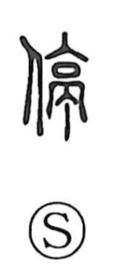

停

Uncategorized
Kun: tomaru, tomeru | On: tei
to stop ・ to halt ・ to stay ・ to rest
Explanation
A phono-semantic character formed with the person element beside 亭 (tei). The graph 亭 portrays a post-station: a high, gated building with quarters and a watchtower. In the Han period, such stations stood at ten-li intervals and provided lodging for officials. 停 originally pictures people remaining at a 亭, and from this concrete scene the sense extended to stopping, staying, or taking one’s rest. Traditional glosses already explain it as to stay or lodge.